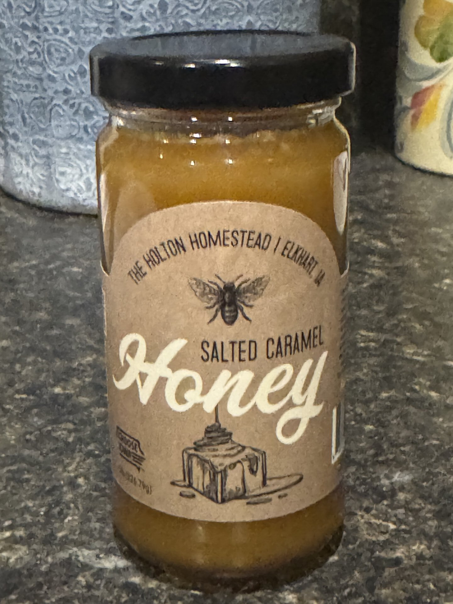
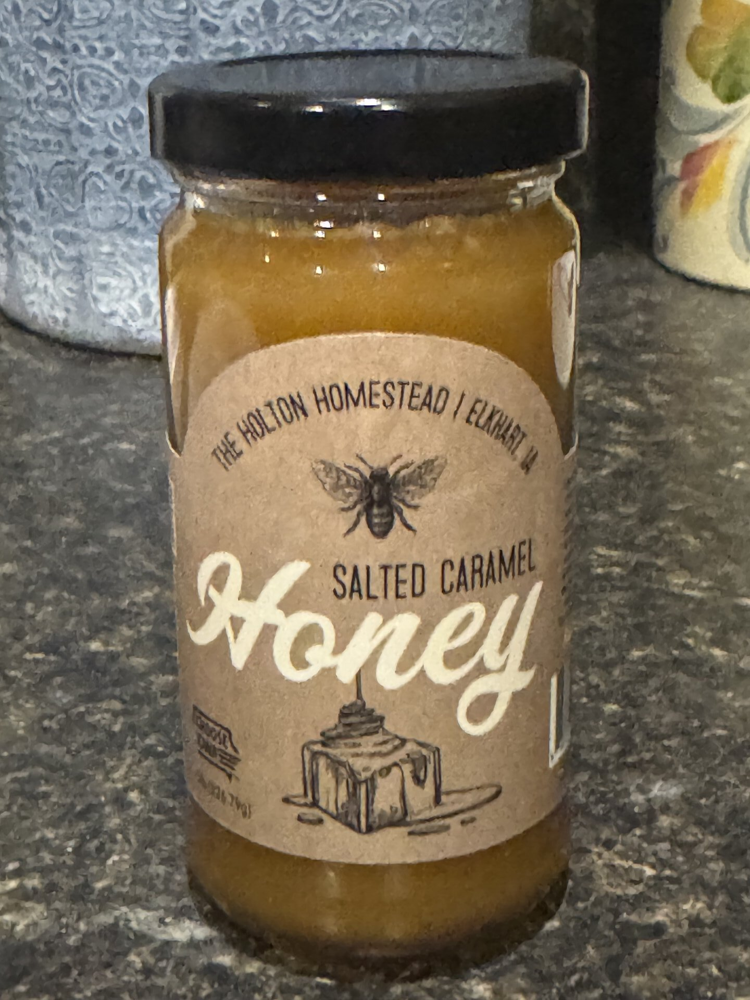
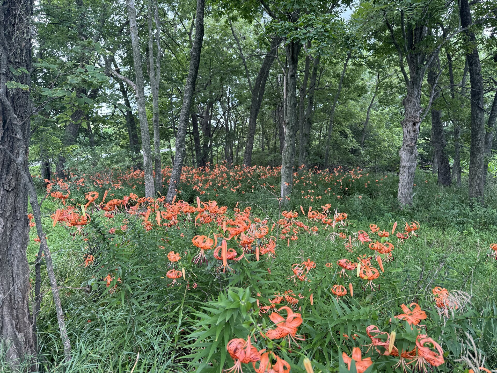
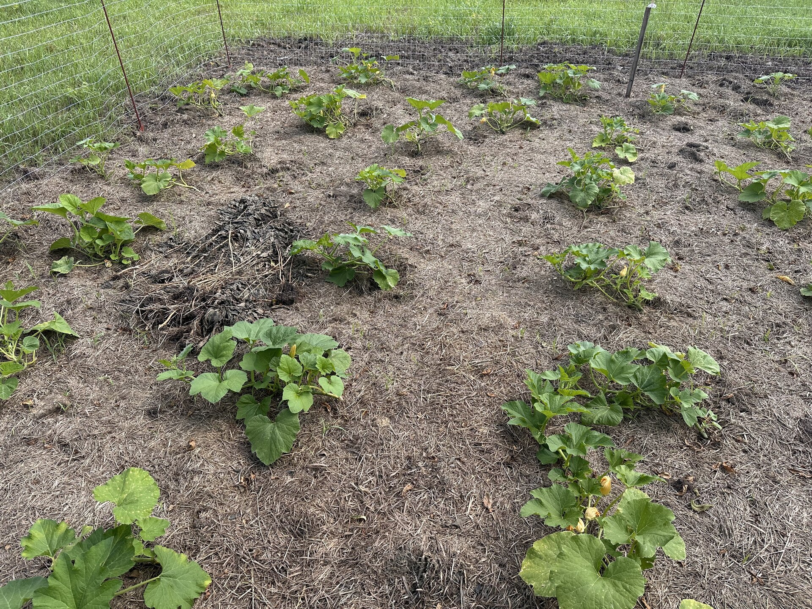
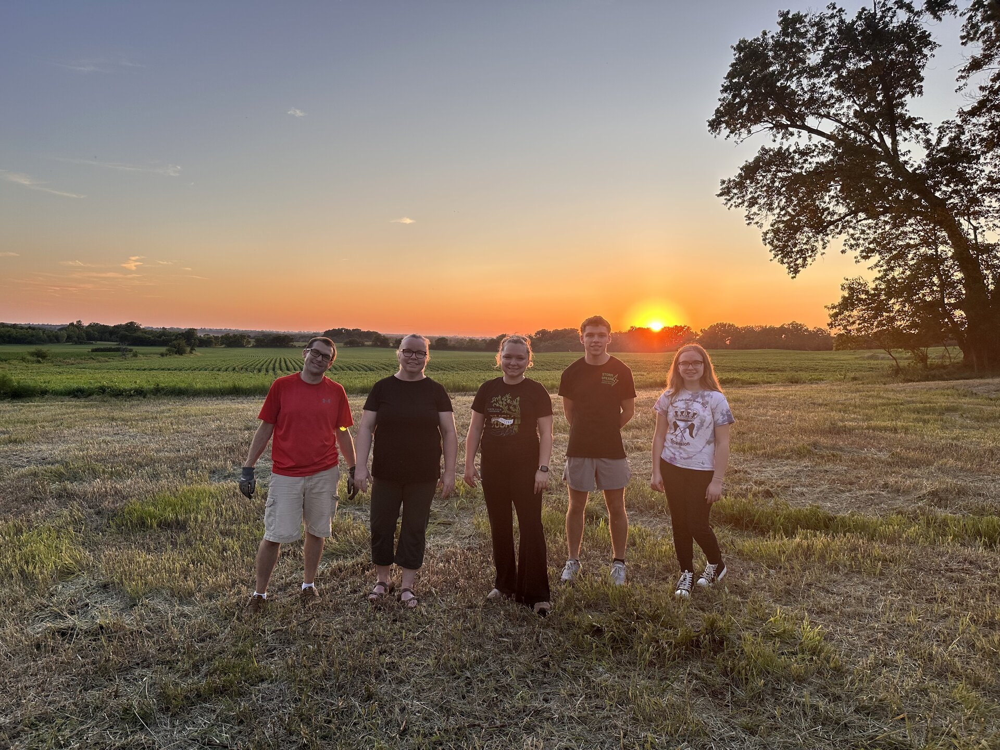
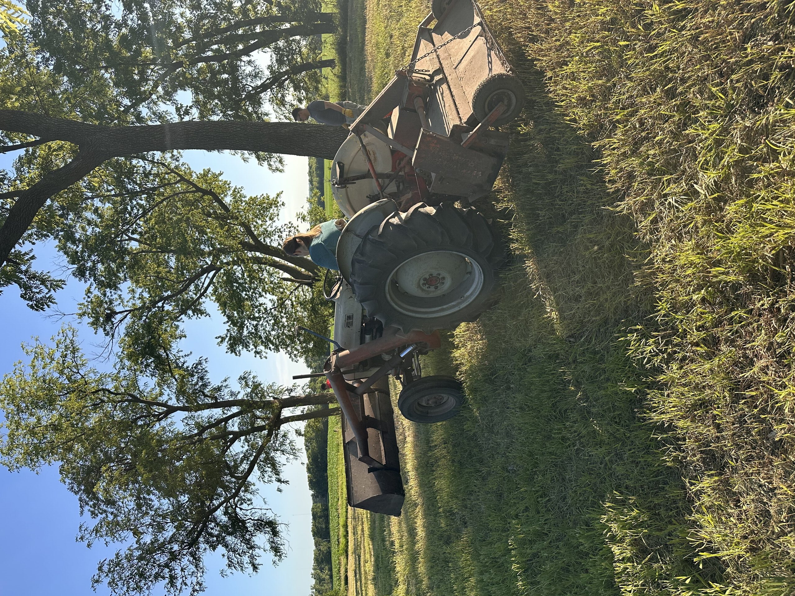

Feb 13 2026
We just found this honey seller 8 miles down the road from us when we were at the Des Moines Home and Garden show! Local honey is wonderful for supporting beekeepers in our area.
If it grows we will try it
We just found this honey seller 8 miles down the road from us when we were at the Des Moines Home and Garden show! Local honey is wonderful for supporting beekeepers in our area.
Picked up Bachelor Button 'Blue Boy' seeds at Wal-Mart. These cheerful blue blooms are perfect for attracting pollinators and will add a lovely splash of color to the garden.

Stocked up on seeds, quite the haul: sunflowers, snapdragons, dahlias, zinnias, sweet peas, nasturtiums, feverfew, and crepis drumstick flowers. A lovely mix from Eden Brothers, Baker Creek, Botanical Interests, and Livingston. Matt's still wants that bee hive.

Got our pumpkin and gourd seeds early this year! A wonderful variety from Livingston and Burpee: mini pumpkins, white pumpkins, Jack-O'-Lanterns, ornamental gourds including Turk's Turban and Daisy gourds, and even a few specialty varieties like Big Warty Thing and Peanut pumpkins. Planning ahead means we can start them at just the right time and hopefully have a bountiful harvest come fall.

Pumpkin and gourd harvest day! The striped and warty gourds tumbled out of the box in a riot of cream, orange, and deep green—each one a little work of art. The bright orange pumpkins scattered across the lawn caught the afternoon sun beautifully.


Tiger Lilies (Lilium lancifolium) blooming along the treeline. They don't bloom very long. Free to anyone who wants to dig them up.
Discovered a bee colony in a walnut tree! We were cleaning up the grass and heard buzzing. The tree was only about 30 feet from the pumpkins and gourds.

Good progress for 20 days! The pumpkins and gourds are thriving. We have been lucky with rain this year.
Day we signed the papers, the pumpkins had to go in.
 Bought some pumpkin and gourd seeds. We'll see if we can start them and have something to harvest that late in the season.